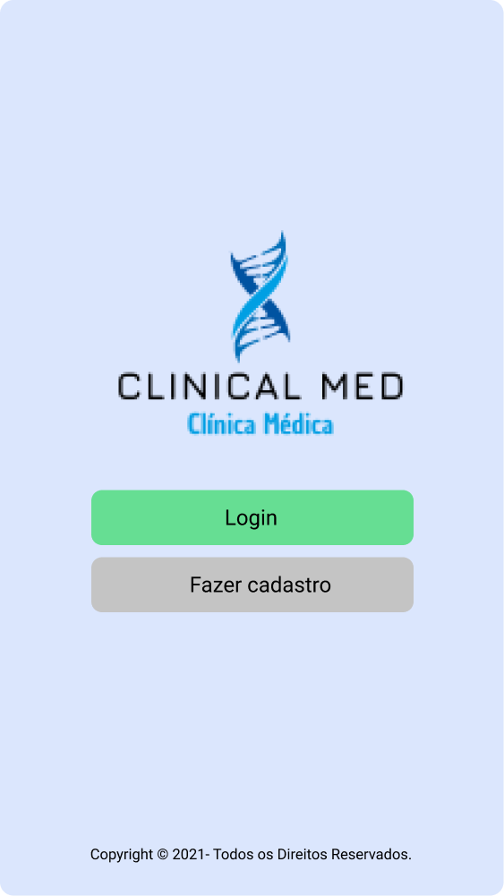

Sobre o Sistema da CLINICAL MED ☕
O sistema se destina ao mercado de clínicas que oferecem consultas médicas gerais, consultas relacionadas à área de nutrição e de odontologia. O mesmo tem como objetivo melhorar a comunicação entre profissional e o paciente, no qual os pacientes poderão marcar, solicitar um novo agendamento, cancelar e verificar suas consultas em relação à disponibilidade. A aplicação também conta com um sistema de alerta ao qual notifica o usuário pelo e-mail, lembrando-o do dia e horário marcado de sua consulta e possíveis alterações de horários. Além disso, possui um chat direto com a atendente para sanar possíveis dúvidas e o cadastro das receitas médicas e encaminhamentos para possíveis exames. O sistema será WEB, uma aplicação acessível que pode ser usada por qualquer dispositivo que tenha acesso a internet, permitindo o acesso e compartilhamento em tempo real das informações sem que haja a necessidade do download do software no dispositivo. O mesmo fará o uso de JavaScript, HTML5, CSS3, BOOTSTRAP 4 no seu desenvolvimento, a fim de garantir disponibilidade, desempenho e usabilidade satisfatória ao cliente.